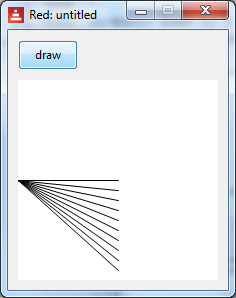

Red by Example - an accessible reference by exampleLast update on 20-Dec-2019drawindex parse vid series draw help about links contact 1. DRAWING WITH RED
1.1. Introduction
2.1. Drawing A Line and Box On A Canvas
2.2. Pens, Fill-pens, color
2.3. Drawing Text
3.1. The Draw Block - Introduction
3.2. The Draw Block - Variables, Compose, Reduce
3.3. A 'do' Block For Initialisation
4.1. Animation: Rate, On-time
4.2. The Bouncing Ball Program
5.1. Mouse Coordinates, Events, All-over
5.2. Shape Sub-dialect
6.1 Transformations On Drawings
1. DRAWING WITH RED1.1. Introduction
The Draw dialect is a domain-specific language intended to simplify
drawing. The language was created in Red itself. However, when you draw
lines, shapes, animations, you will also make use of Red, and of VID (to
place and set up GUI widgets - 'faces'). Here, we will work through some
typical graphics tasks, and introduce - or remind you - about relevant Red
and VID facilities.
This page is only a sampling of Draw. It does not cover ways of speeding-up
animations, or the full range of facilities. Draw has many commands, and
some of these have many options - so you will need to explore its official
documentation:
Draw:
https://doc.red-lang.org/en/draw.html
There are some impressive demos on:
http://www.red-lang.org/2016/03/060-red-gui-system.html
You might also need VID:
Official:
https://doc.red-lang.org/en/vid.html
Red-by-example:
http://www.red-by-example.org/vid.html
When building a GUI with tightly-linked widgets, it can be very useful to
use Red's reactive programming facilities, as shown here:
http://www.red-lang.org/2016/06/061-reactive-programming.html
Thanks to Gregg Irwin for suggestions:
https://gist.github.com/greggirwin
top
2.1. Drawing A Line and Box On A Canvas
Here is the code for our first program:
Red [ needs 'view ]
view [
canvas: base 150x150 draw [line 10x0 160x50]
]
Screenshot:
The program needs to incorporate View facilities, at the top.
We use a VID view to set up and place faces (GUI widgets, controls) on the
window. Here, we only use a base (though we could also draw on an
image). We chose to name it 'canvas'.
Following the draw, we have a block of drawing commands, with values if
necessary. Here we draw a line from 10x0 to 160x50. Note that the
line is too long, and the extra part is clipped.
The top left of the base is (0, 0), and in Red we use pair! notation -
such as 0x0.
Next we extend the program to draw a box, providing its top-left and
bottom-right coordinates. We have also used a VID option to make the
canvas white.
Red [ needs 'view ]
view [
canvas: base 150x150 white draw [
line 10x0 160x50
box 10x10 100x80
]
]
Screenshot:
In fact, a box can be created by specifying any 2 opposite corners (such as
bottom-left and top-right).
There are lots of shapes, such as circle, ellipse, polygon, etc. Details
are in the Draw official documentation.
Note that we provide values - not variables, expressions - for the shape
coordinates. We cannot put, for example:
xy-coords: 22x33
draw [line xy-coords 100x100] ;-- no!
Later, we will see how to work with this.
Drawing commands can be placed in nested blocks, as in:
[[line 10x0 160x50] [box 10x10 100x80]]
The end result is the same, but the structure can be useful if we need to
process shapes (e.g. deleting a particular shape).
top
2.2. Pens, Fill-pens, color
Drawing lines and unfilled shapes is done with a pen, whereas filled
shapes are drawn with a fill-pen.
They have default settings (a 1-pixel black line etc.) but we can provide
new settings, such as colour, width, and thickness.
Here is an example:
Red [ needs 'view ]
view [
canvas: base 200x200 white draw [
pen blue line-width 8 line 10x0 160x50
pen red box 10x10 100x60
fill-pen pink box 10x80 120x140
pen off box 10x150 120x190
]
]
Screenshot:

We created a blue pen with an 8-pixel width, and drew a line. The pen
command must be followed immediately by a colour.
We altered the pen to red, and drew a box, unfilled.
We set the fill-pen to pink, then drew a box - note the red edges.
We turned the pen off, then drew a pink box. There are no edges on the box.
There are more pen options, such as specifying the shape of the line-end,
and how joins appear.
Note also that we can draw on an image widget, as in :
Red [needs 'View]
view [
photo: image 250x250 %country.png
draw [fill-pen gold pen off circle 100x50 25] ;-- add sun
]
Screenshot, showing the added 'sun':
top
2.3. Drawing Text
We can incorporate text in a drawing, as follows:
Red [needs 'View ]
view [
canvas: base 150x150 white
draw [text 50x50 "Hello!!!!" circle 70x60 40]
]
Screenshot:
If your text in not part of the drawing (such as instructions, captions on
faces - widgets) - you can use the VID text face.
It is also possible to specify fonts and sizes.
top
3.1. The Draw Block - Introduction
In the earlier examples, we followed 'draw' with a block of commands. This
is the 'draw-block'. We can add or remove items to it, as required.
Here, we introduce a button, and show how to use a draw-block. We have the
code:
Red [needs 'view]
do-but1: function [] [
print ["canvas/draw-before: " canvas/draw]
print ["size .. " canvas/size]
canvas/size: 160x200
canvas/draw: [fill-pen blue box 10x10 60x60]
print ["canvas/draw-after: " canvas/draw]
]
view [
b1: button "draw" [ do-but1]
return
canvas: base 200x200 white draw [ box 44x44 88x88]
]
Running it shows:
When we click the button, the canvas goes smaller, and we see a blue box:
We also see this printed on the console:
canvas/draw-before: box 44x44 88x88
size .. 200x200
canvas/draw-after: fill-pen blue box 10x10 60x60
Note the printing: we can access options using the /refinement notation, as
in canvas/size. The /draw contains a block of drawing instructions. It
only holds one block, so when we assign the instructions to draw a blue box,
the previous state is erased. However it is easy to add drawing
instructions to the block, like this:
canvas/draw: [fill-pen blue box 10x10 60x60]
append canvas/draw [box 33x33 170x55] ;-- added this - another blue
box
print ["canvas/draw-after: " canvas/draw].
It draws 2 blue boxes, and prints:
canvas/draw-before: box 44x44 88x88
size .. 200x200
canvas/draw-after: fill-pen blue box 10x10 60x60 box 33x33 170x55
We could use append/only if we wanted to keep each shape in its own block,
to allow access to individual shapes.
Here is another example, which initially draws an unfilled box. It detects
the on-down (mouse-click) event of the base, then draws a red filled
box. The initial box vanishes of course, because the draw block is
completely replaced by a new one.
Red [ needs 'view ]
in-canvas: function [] [
canvas/draw: [ fill-pen red box 2x2 30x30]
]
view [
canvas: base 200x200 white draw [ box 44x44 88x88]
on-down[in-canvas]
]
In summary, when the draw-block is drawn, the previous drawing is erased,
and the new drawing is created. If you want something drawn, put it in the
block.
The draw-block thus contains the whole drawing, as text. You can manipulate
it, for example to add an 'undo' facility, or to select part of the drawing.
top
3.2. The Draw Block - Variables, Compose, Reduce
What if we want to use a variable, as in:
top-left: 22x33
draw [ line top-left 100x100]
We can't do this - the draw block must use values. We need to do some kind
of evaluation first, and in Red, we can use compose and reduce. They
are similar, and here is a summary:
The word reduce returns a copy of a block, evaluating all expressions
in the block.
The word compose returns a copy of a block, evaluating only paren!
items. A paren! type is surrounded in (parentheses).
We can also use Red symbols. For example the symbol:
'elephant
evaluates to:
elephant
Here are some examples:
>> a: 11 b: 22 ;-- create some variables and a block
>> blk: [line (a + b) a + b "message" 123]
>> compose blk
== [line 33 a + b "message" 123] ;-- note (...) effect
>>
>> ;-- now try reduce, on same block
== [line (a + b) a + b "message" 123]
>> reduce blk
*** Script Error: line has no value
>> ;-- try another block, with a 'symbol
>> blk: ['line a b]
>> reduce blk
== [line 11 22] ;-- what we want
Here is a practical example - we want to use a variable for the start of a
line. We can use compose or reduce:
top-left: 4x0
compose [pen red line (top-left) 3x66] ;compose only ( )
reduce ['pen red 'line top-left 3x66]
Either of these results in:
pen 255.0.0 line 4x0 3x66
Here is a program which draws a line at a different place, with every
button-click. Note that we cannot append to an uninitialised block, so we
have used the VID 'do' feature for some once-only initialisation.
Red [needs 'view]
line-end: 100x100
do-but1: func [] [ ;--func allows easier global use
append canvas/draw compose [line 0x100 (line-end)]
line-end: line-end + 0x10
]
view [
b1: button "draw" [do-but1]
return
canvas: base 200x200 white
do [ ;-- initialisation
canvas/draw: copy []
]
]
Screenshot:

Here is the same basic program, but one click causes 10 lines to be drawn
rapidly, without any user-interaction. The button-click code is:
do-but1: func [] [
line-end: 100x100
loop 10 [
append canvas/draw compose [line 0x100 (line-end)]
line-end: line-end + 0x10
]
]
top
3.3. A 'do' Block For Initialisation
Sometimes it is useful to initialise variables and faces. We can add
a 'do' block at the bottom of view. It contains Red code, as in:
Red [needs 'View]
b: false
... etc
view [
canvas: base white 350x350
; ...etc
do [
canvas/draw: [box 10x10 30x30] ;-- initial shape
b: true
]
]
top
4.1. Animation: Rate, On-time
Each face can have a rate timer, which can be made to tick regularly,
or wait for a duration.
An integer value (above 0) sets a frequency (per second), a time! type
sets a duration, and none stops it. Here, we set the canvas rate to 1
(per second), and detect the tick via the on-time event. The blue square
moves diagonally across the screen, to the bottom-right.
Red [ needs 'view ]
top-left: 10x10
canvas-tick: func [] [
top-left: top-left + 8x8
canvas/draw: reduce ['fill-pen blue 'box top-left top-left + 55x55]
]
view [
canvas: base 200x200 white rate 1
on-time [canvas-tick]
]
The animation is jerky, but try changing the increment to e.g. 1x1, and the
rate to 20, for a gliding blue box.
top
4.2. The Bouncing Ball Program
This is a standard animation example. A blue ball bounces around the
screen. You can stop and start it with buttons - it manipulates the rate
to do this. The items you might wish to play around with have been
initialised at the top of the code.
It could be improved - the testing for wall contact involves the centre of
the ball, whereas it should be the edge. Some work for you to do!
Red [needs 'view]
draw-freq: 25 ;-- init
centre: 10x10
x-step: 1
y-step: 3
in-canvas: func [] [ ;-- for every tick
canvas/rate: draw-freq
;-- hit an edge? And add a bit of randomness, for fun.
if centre/x > 300 [x-step: -1 * x-step - random 0.2]
if centre/y > 300 [y-step: -1 * y-step - random 0.2]
if centre/x < 0 [x-step: -1 * x-step]
if centre/y < 0 [y-step: -1 * y-step]
incr: to-pair reduce [(3 * x-step) (3 * y-step)]
centre: centre + incr
canvas/draw: reduce ['fill-pen blue 'circle centre 8]
;-- use append in above line, if you want a ball trail
]
do-stop: func [] [
canvas/rate: none ;-- stop timer
]
do-start: func [] [
canvas/rate: draw-freq ;starts
]
view [
stop-btn: button "stop" [do-stop]
start-btn: button "start" [do-start]
return
;-- rate set in do-block, below
canvas: base 300x300 white
on-time [in-canvas]
do [ ;-- init
canvas/rate: draw-freq
canvas/draw: copy [] ;-- for the first append
]
]
top
5.1. Mouse Coordinates, Events, All-over
When drawing with user-interaction, we can use buttons, etc, and it can also
be useful to use the mouse position. Here is a fragment of code. When we
click on the base, 'do-down' is called, passing the event object into 'ev'.
The /offset refinement provides the position where the left mouse button was
depressed.
do-down: func [ev] [
xy-pos: ev/offset ;-- mouse position - a pair
;-- etc...
]
view [
canvas: base 300x300 white on-down [do-down event]
]
Here is a program which draws straight lines between successive mouse-clicks:
Red [needs 'View
title: "Sketch with mouse"
]
sketching: false
do-down: func [ev] [
xy-New: ev/offset ;-- mouse position - pair
either not sketching [ ;-- first time?
sketching: true
xy-Start: xy-New ;-- no visible line
] [
append canvas/draw compose [line (xy-Start) (xy-New)]
xy-Start: xy-New ;-- remember where we were
]
]
clear-canvas: func [ev] [
sketching: false
xy-Start: ev/offset
canvas/draw: copy [pen red line-width 7]
]
view [
break-btn: button "Break line" [sketching: false]
clear-btn: button "Clear" [clear-canvas event]
return
canvas: base 300x200 white draw [pen red line-width 7]
on-down [do-down event] ;-- click in canvas?
]
And a screenshot:
Here is another example which uses the VID all-over command. This
allows us to pick up mouse-move events.
This program lets you click anywhere on the canvas, and drag open a box to
the required size.
Red [needs 'View]
mouse-state: 'up
draw-block: copy []
coord1: 0x0
do-down: func [event] [
mouse-state: 'down
coord1: event/offset
]
do-up: func [] [
mouse-state: 'up
]
do-move: func [event] [
if mouse-state = 'down [ ;-- and over the canvas
draw-block: copy []
draw-block: compose [box (coord1) (event/offset)] ;based on mouse
canvas/draw: draw-block
]
]
view [
canvas: base 200x200 white all-over ;-- nb all-over
on-up [do-up]
on-down [do-down event]
on-over [do-move event]
]
top
5.2. Shape Sub-dialect
The Shape sub-dialect has similar commands to Draw, but they can be more
convenient, such as:
- automatically closing shapes
- relative drawing, from the previous point. This is done by using the
lit-word version - for example 'line rather than line.
We enclose the commands in a block, after 'shape'. Here is some code
Red [needs 'View]
;-- shape dialect
do-down: func [] [
canvas/draw: [
line-width 5 shape [
line 0x0 90x30 30x90
'hline 90 'vline 22
]
]
]
view [
start-btn: button "Draw" [do-down]
return
canvas: base 300x200 white draw [line-width 7]
]
- It draws 2 lines - note the series of points - (3 here, not 4) - for
the line command.
- It uses the relative versions 'hline, 'vline to draw horizontal and
vertical lines, with one parameter specified.
- It closes the shape (the long 45 degree diagonal line).
Screenshot:
The official doc is at:
https://doc.red-lang.org/en/draw.html#_shape_commands
top
6.1 Transformations On Drawings
Red provides facilities to transform drawings, such as scaling, rotating.
There are also facilities to work with transformation matrices directly.
In general, the transformations work on all draw commands which follow them.
Alternatively, you can restrict the transformations to a block.
Here is the basis of a clock program. It initially draws a vertical line,
and then rotates it by 6 degrees, about one of its ends. The rate of the
canvas tick is once per second, so effectively, we have a clock second-hand.
Red [needs 'View ]
do-rot: func [] [
canvas/draw: compose[rotate 6 150x150 (canvas/draw) ]
]
view[
canvas: base 330x330 white rate 1
draw [line 150x150 150x10]
on-time [do-rot]
]
Note that we chose to rotate the current state of canvas/draw, rather than
incrementing an 'angle' variable.
This concludes our brief sampling of Red's Draw dialect. Look at the
introduction above for more links etc.
|